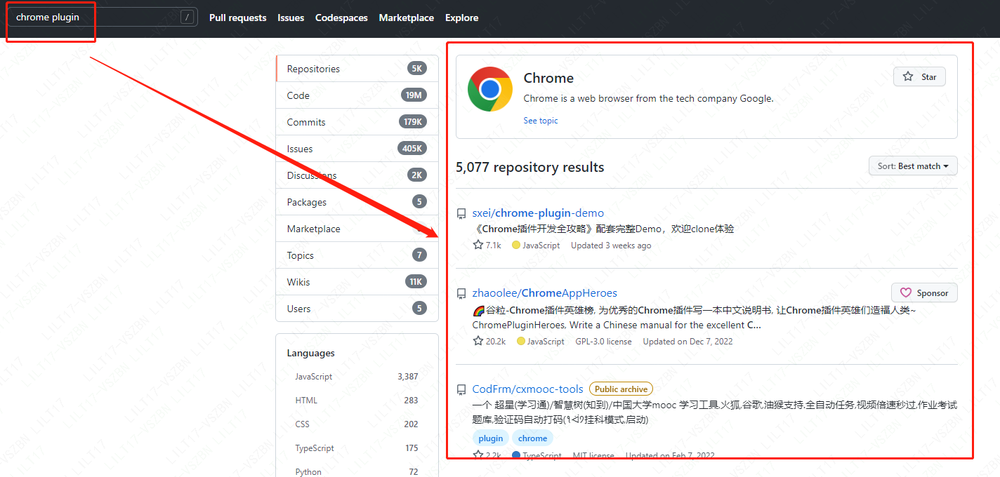

尝试开发一个chrome插件
1.知识破冰

什么是 chrome 插件
Chrome 插件是一个用 Web 技术开发、用来增强浏览器功能的软件，它其实就是一个由 HTML、CSS、JS、图片等资源组成的一个.crx 后缀的压缩包.Chrome 本身提供了很多实用 API 供我们使用
Chrome 插件没有严格的项目结构要求，只要保证本目录有一个 manifest.json 即可
Chrome 要求插件必须从它的 Chrome 应用商店安装，其它任何网站下载的都无法直接安装，但打开开发者模式就能以文件夹的形式直接加载插件
核心介绍
manifest.json
这是一个 Chrome 插件最重要也是必不可少的文件，用来配置所有和插件相关的配置，必须放在根目录。
1
2
3
4
5
6
7
8
9
10
11
12
13
14
15
16
17
18
19
20
21
22
23
24
25
26
27
28
29
30
31
32
33
34
35
36
37
38
39
40
41
42
43
44
45
46
47
48
49
50
51
52
53
54
55
56
57
58
59
60
61
62
63
64
65
66
67
68
// 清单文件的版本，这个必须写，而且必须是2
"manifest_version": 2,
// 插件的名称（自定义）
"name": "demo",
// 插件的版本（自定义）
"version": "1.0.0",
// 插件描述（自定义）
"description": "简单的Chrome扩展demo",
// 图标预设尺寸，一般偷懒全部用一个尺寸的也没问题
"icons":
{
"16": "img/icon.png",
"48": "img/icon.png",
"128": "img/icon.png"
},
// 浏览器右上角图标设置 【browser_action、page_action、app必须三选一】
"browser_action":
{
//插件图标
"default_icon": "img/icon.png",
// 图标悬停时的标题，可选
"default_title": "这是一个示例Chrome插件",
// 悬停页面内容
"default_popup": "popup.html"
},
// 会一直常驻的后台JS或后台页面
"background":
{
// 2种指定方式，如果指定JS，那么会自动生成一个背景页
"page": "background.html"
//"scripts": ["js/background.js"]
},
// 权限申请
"permissions":
[
"tabs", // 标签
"notifications", // 通知
"webRequest", // web请求
"webRequestBlocking",
],
// 需要直接注入页面的JS
"content_scripts":
[
{
//"matches": ["http://*/*", "https://*/*"],
// "<all_urls>" 表示匹配所有地址
"matches": ["<all_urls>"],
// 多个JS按顺序注入
"js": ["js/jquery-1.8.3.js", "js/content-script.js"],
// JS的注入可以随便一点，但是CSS的注意就要千万小心了，因为一不小心就可能影响全局样式
"css": ["css/custom.css"],
// 代码注入的时间，可选值： "document_start", "document_end", or "document_idle"，最后一个表示页面空闲时，默认document_idle
"run_at": "document_start"
},
// 这里仅仅是为了演示content-script可以配置多个规则
{
"matches": ["*://*/*.png", "*://*/*.jpg", "*://*/*.gif", "*://*/*.bmp"],
"js": ["js/show-image-content-size.js"]
}
],
2.页面书写
popup
点击插件图标，或者指定页面触发时打开的一个小窗口网页